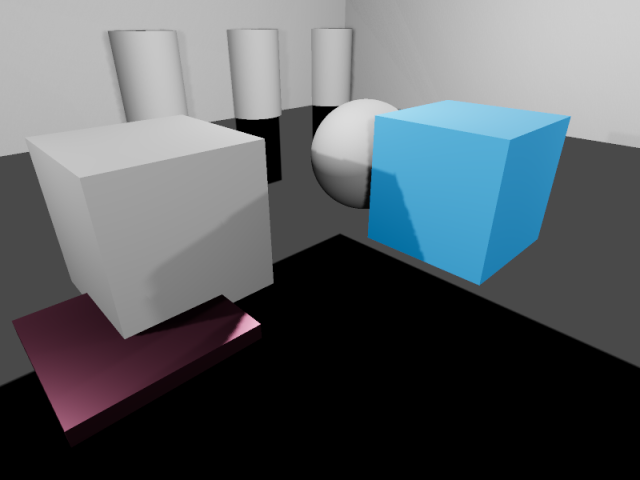

Reflection probe
Như đã nêu trong Standard Material 3D và ORM Material 3D, vật thể có thể hiển thị ánh sáng phản xạ và/hoặc ánh sáng khuếch tán. Reflection probe được dùng làm nguồn ánh sáng phản xạ và ánh sáng ambient cho các vật thể nằm trong vùng ảnh hưởng của nó. Chúng có thể cung cấp phản xạ chính xác hơn VoxelGI và SDFGI mà vẫn khá nhẹ về tài nguyên hệ thống.
Vì reflection probe cũng có thể lưu ánh sáng ambient, chúng có thể dùng làm phương án thay thế nhẹ cho VoxelGI và SDFGI khi không thể dùng lightmap đã bake (ví dụ trong màn chơi được sinh thủ tục).
Reflection probe cũng có thể dùng đồng thời với phản xạ không gian màn hình (screen-space reflections) để cung cấp phản xạ cho các vật thể nằm ngoài màn hình. Khi đó, Godot sẽ trộn phản xạ không gian màn hình với phản xạ từ reflection probe.
Xem thêm
Không chắc ReflectionProbe có phù hợp với nhu cầu của bạn? Xem Nên dùng kỹ thuật chiếu sáng toàn cục nào? để so sánh các kỹ thuật GI có trong Godot 4.
So sánh trực quan

Tắt reflection probe. Bầu trời của môi trường được dùng làm phương án dự phòng.

Bật reflection probe.

Bật reflection probe đồng thời dùng LightmapGI. Lightmap xuất hiện trong phản xạ.
Bằng cách kết hợp reflection probe với phản xạ không gian màn hình, bạn có được ưu điểm của cả hai: phản xạ chất lượng cao cho cấu trúc chung của căn phòng (vẫn còn khi nằm ngoài màn hình), đồng thời có phản xạ thời gian thực cho các chi tiết nhỏ.

Phản xạ trong một căn phòng chỉ dùng ReflectionProbe. Hãy để ý các chi tiết nhỏ không có phản xạ nào.

Phản xạ trong một căn phòng chỉ dùng phản xạ không gian màn hình. Hãy để ý phản xạ ở hai bên tường của căn phòng bị thiếu một phần do nằm ngoài màn hình.

Phản xạ trong một căn phòng dùng đồng thời ReflectionProbe và phản xạ không gian màn hình. Phản xạ không gian màn hình được trộn với reflection probe, và reflection probe đóng vai trò dự phòng ở những chỗ phản xạ không gian màn hình không hiển thị được phản xạ nào.
Thiết lập ReflectionProbe
Thêm một node class_ReflectionProbe.
Cấu hình extents của ReflectionProbe trong Inspector cho vừa với scene. Để có phản xạ tương đối chính xác, thông thường bạn nên có một node ReflectionProbe cho mỗi phòng (đôi khi nhiều hơn với phòng lớn).
Mẹo
Hãy nhớ rằng extents của ReflectionProbe không nhất thiết phải vuông, và bạn thậm chí có thể xoay node ReflectionProbe cho vừa với những căn phòng không thẳng hàng với lưới X/Z. Hãy tận dụng điều này để bao phủ phòng tốt hơn mà không phải đặt quá nhiều node ReflectionProbe.
Các thuộc tính của ReflectionProbe
Update Mode: Kiểm soát khi nào reflection probe được cập nhật. Once chỉ kết xuất scene một lần mỗi khi ReflectionProbe bị di chuyển. Điều này giúp kết xuất nhanh hơn nhiều so với chế độ cập nhật Always, vốn buộc probe kết xuất lại mọi thứ xung quanh mỗi frame. Hãy để thuộc tính này ở Once (mặc định) trừ khi bạn cần reflection probe cập nhật mỗi frame.
Intensity: Độ sáng của phản xạ và chiếu sáng ambient. Thông thường không cần đổi giá trị mặc định
1.0, nhưng bạn có thể giảm xuống dưới1.0nếu thấy phản xạ quá mạnh.Max Distance: Kiểm soát khoảng cách tối đa mà camera nội bộ của ReflectionProbe sử dụng. Khoảng cách này luôn ít nhất bằng Extents, nhưng có thể tăng lên để các vật thể nằm ngoài extents hiển thị trong phản xạ. Thuộc tính này không ảnh hưởng đến khoảng cách tối đa mà bản thân ReflectionProbe còn hiển thị.
Extents: Vùng sẽ chịu ảnh hưởng bởi chiếu sáng và phản xạ của ReflectionProbe.
Origin Offset: Gốc tọa độ của camera nội bộ dùng để kết xuất reflection probe. Gốc này luôn phải nằm trong Extents. Nếu cần, hãy điều chỉnh để phản xạ không bị che khuất bởi một vật thể đặc nằm đúng tâm ReflectionProbe.
Box Projection: Kiểm soát việc có dùng hiệu chỉnh thị sai (parallax correction) khi kết xuất reflection probe hay không. Tùy chọn này điều chỉnh diện mạo của phản xạ tùy theo vị trí camera (so với reflection probe). Nó tốn một chút hiệu năng, nhưng mức tăng chất lượng thường rất đáng trong những căn phòng hình hộp. Lưu ý hiệu ứng này không hoạt động tốt bằng trong các phòng có hình dạng kém đều đặn (chẳng hạn phòng hình elip).
Interior: Nếu bật, chiếu sáng ambient sẽ không lấy từ bầu trời của môi trường, và bầu trời nền sẽ không được kết xuất vào reflection probe.
Enable Shadows: Kiểm soát việc có kết xuất bóng của đèn thời gian thực bên trong reflection probe hay không. Bật tùy chọn này để cải thiện chất lượng phản xạ, đổi lại tốn hiệu năng. Nên tắt tùy chọn này với các reflection probe ở chế độ Always, vì kết xuất phản xạ có bóng mỗi frame rất tốn kém. Bóng của đèn đã bake hoàn toàn không bị ảnh hưởng bởi cài đặt này và sẽ luôn được kết xuất trong reflection probe.
Cull Mask: Kiểm soát những vật thể nào hiển thị trong phản xạ. Có thể dùng để cải thiện hiệu năng bằng cách loại các vật thể nhỏ khỏi phản xạ. Cũng có thể dùng để tránh việc một vật thể bị lỗi hình ảnh tự phản xạ trong những trường hợp không dùng được Origin Offset.
Mesh LOD Threshold: Ngưỡng mức độ chi tiết (LOD) tự động dùng khi kết xuất mesh trong phản xạ. Tùy chọn này chỉ ảnh hưởng đến các mesh đã được tạo LOD tự động. Giá trị cao hơn có thể cải thiện hiệu năng nhờ dùng hình học ít chi tiết hơn, đặc biệt với các vật thể ở xa gốc của phản xạ. Khác biệt về hình ảnh khi dùng vật thể ít chi tiết hơn thường không đáng chú ý trong lúc chơi, nhất là với phản xạ thô (rough).
Nhóm Ambient có một số thuộc tính để điều chỉnh chiếu sáng ambient do ReflectionProbe kết xuất:
Mode: Nếu đặt là Disabled, probe sẽ không thêm ánh sáng ambient nào. Nếu đặt là Environment, màu ánh sáng ambient được tự động lấy mẫu từ bầu trời của môi trường (nếu Interior bị tắt) và màu trung bình của phản xạ. Nếu đặt là Constant Color, màu chỉ định trong thuộc tính Color sẽ được dùng thay thế. Chế độ Constant Color có thể dùng để xấp xỉ chiếu sáng vùng (area lighting).
Color: Màu dùng khi chế độ ánh sáng ambient được đặt là Constant Mode.
Color Energy: Hệ số nhân dùng cho Color tùy chỉnh của ánh sáng ambient. Chỉ có tác dụng khi chế độ ánh sáng ambient là Custom Color.
Trộn ReflectionProbe
Để chuyển tiếp giữa các nguồn phản xạ mượt mà hơn, Godot hỗ trợ tự động trộn probe:
Tối đa 4 ReflectionProbe có thể được trộn với nhau tại một vị trí. ReflectionProbe cũng sẽ mờ dần một cách mượt mà về chiếu sáng môi trường khi nó không chạm vào node ReflectionProbe nào khác.
SDFGI và VoxelGI sẽ trộn mượt mà với ReflectionProbe nếu được dùng. Nhờ đó bạn có thể đặt ReflectionProbe một cách có chiến lược để có phản xạ chính xác hơn (hoặc hoàn toàn thời gian thực) ở những chỗ cần, trong khi vẫn có phản xạ thô trong vùng ảnh hưởng của VoxelGI hoặc SDFGI.
Để nhiều ReflectionProbe trộn với nhau, bạn cần cho một phần của mỗi ReflectionProbe chồng lên vùng của nhau. Extents chỉ nên chồng lên các reflection probe khác càng ít càng tốt để cải thiện hiệu năng kết xuất (thường là vài đơn vị trong không gian 3D).
Hạn chế
Khi dùng renderer Forward+, Godot dùng cách tiếp cận clustering để kết xuất reflection probe. Bạn có thể thêm bao nhiêu reflection probe tùy ý (miễn là hiệu năng cho phép). Tuy nhiên, vẫn có giới hạn mặc định là 512 phần tử cluster có thể xuất hiện trong khung nhìn camera hiện tại. Một phần tử cluster là một omni light, spot light, area light, decal hoặc reflection probe. Có thể tăng giới hạn này bằng cách điều chỉnh Max Clustered Elements trong Project Settings > Rendering > Limits > Cluster Builder.
Khi dùng renderer Mobile, chỉ có 8 reflection probe được áp dụng trên mỗi resource Mesh. Nếu có nhiều reflection probe hơn ảnh hưởng đến cùng một mesh, không phải tất cả sẽ được kết xuất trên mesh đó.
Tương tự, khi dùng renderer Compatibility, tối đa 2 reflection probe được áp dụng cho mỗi mesh. Nếu có hơn 2 reflection probe ảnh hưởng đến cùng một mesh, các probe thừa sẽ không được kết xuất.